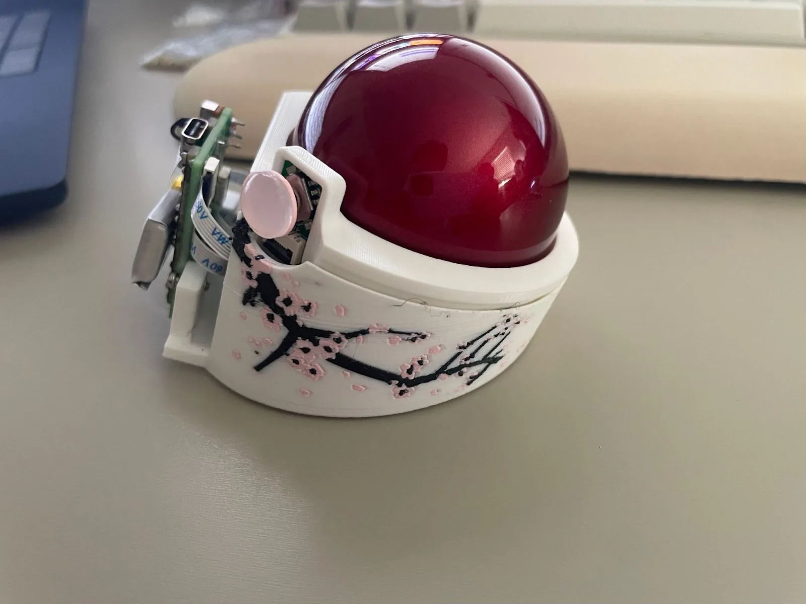
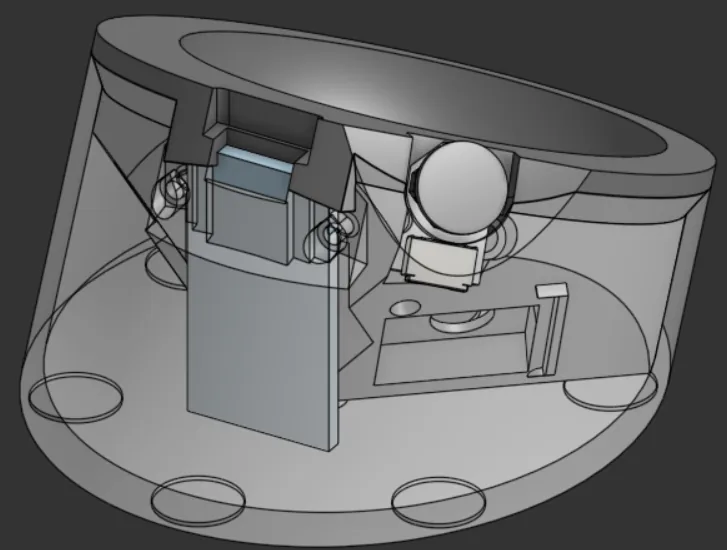
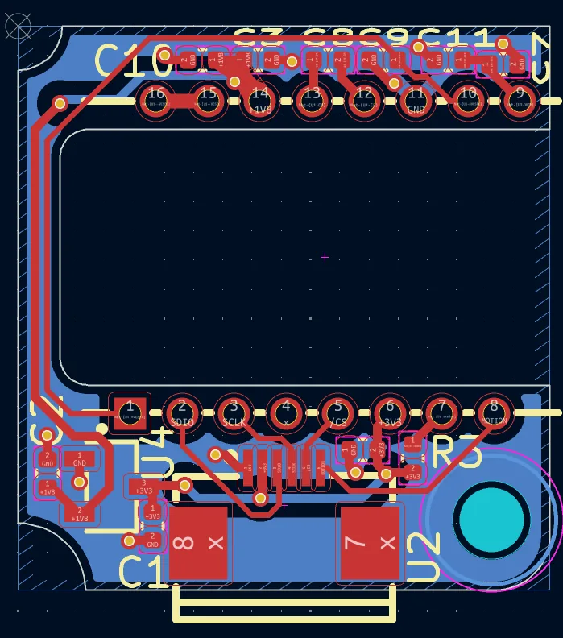
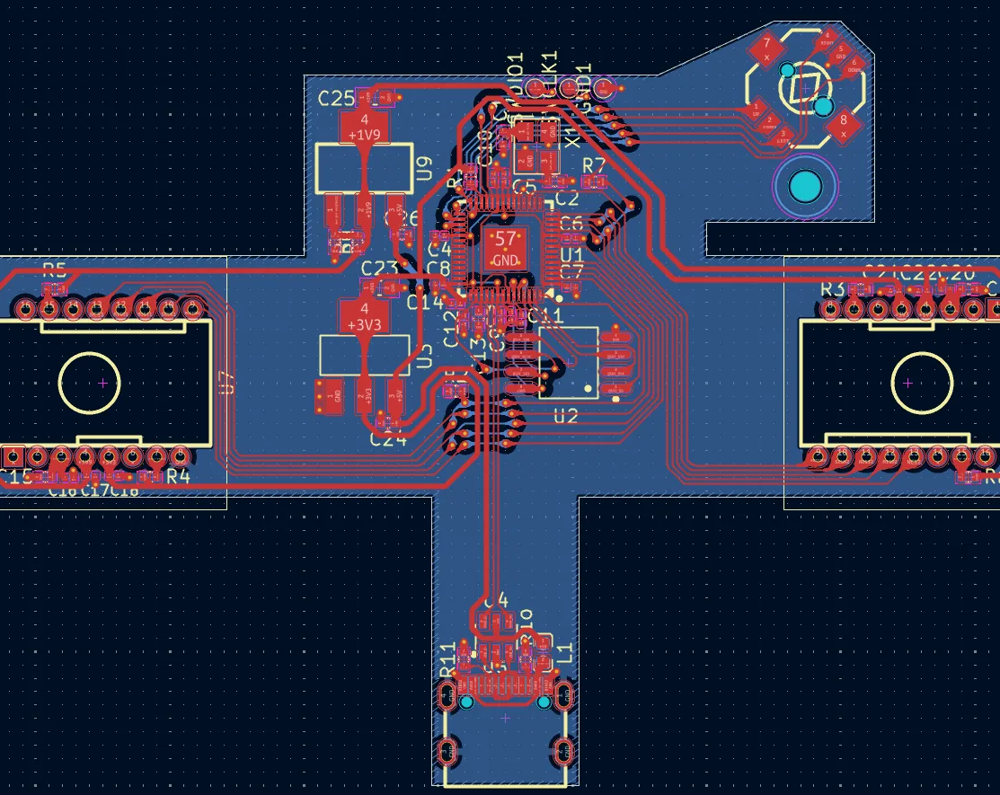
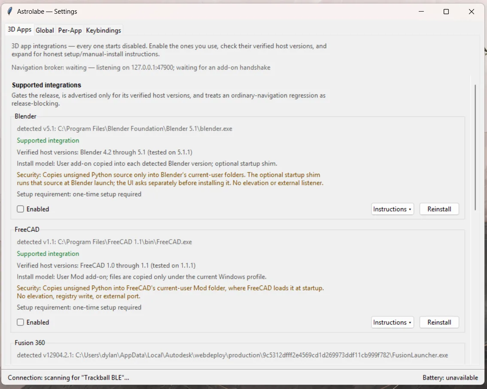
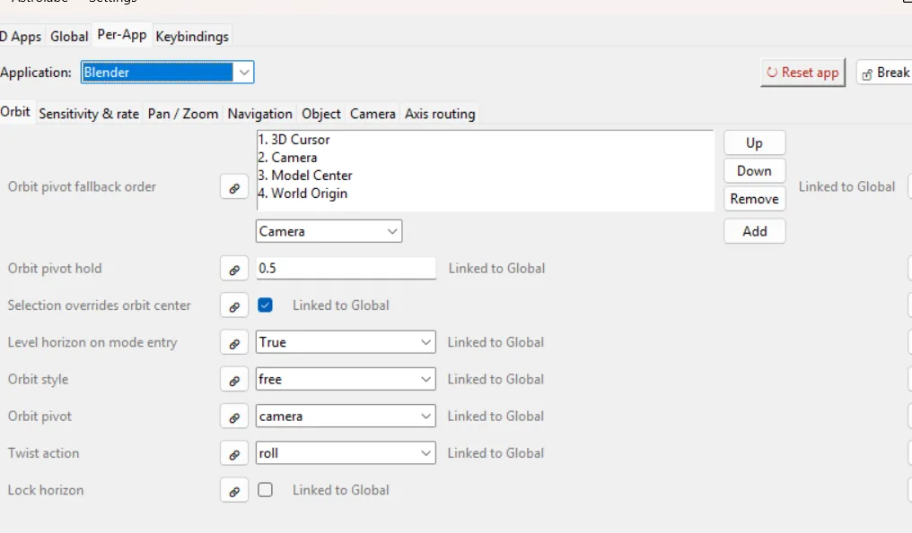
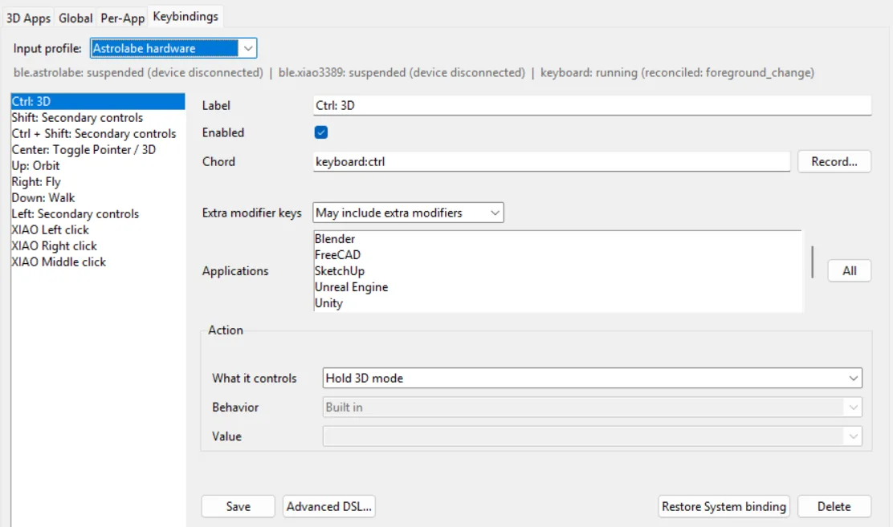
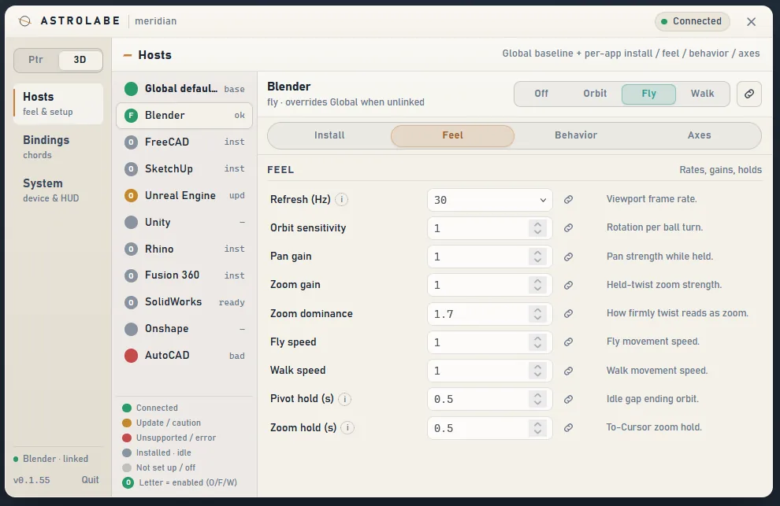

Dual-sensor custom trackball for 3D workflows
Sensor fusion with two PMW3610 mouse sensors gives full 3-axis tracking, and a custom daemon hooks the trackball into 3D and CAD software. Designed for manufacturing, with the intent to sell at scale.
- Role
- Sole designer and builder
- Sensing
- 2× PMW3610 laser sensors
- Battery
- ~30 hours, wireless or wired
- Unit cost
- ~$30 to manufacture
Hardware


The trackball rides on ZrO₂ ceramic bearings, and the overall design is optimized for size, so it is easy to carry and works where desk space is limited. It runs wirelessly or wired with about 30 hours of battery life.
Without the companion software, the trackball works as a normal mouse. The companion software toggles between mouse mode and 3D mode.
Astrolabe is the successor to my earlier vision-tracked 6-axis mouse.
Electronics


Software
An open-source daemon integrates with ZMK BLE protocols, using a GATT stream to transmit 3-axis vectors and convert them into orbit commands for the connected 3D software. It has a fully customizable keybinding system, works wired or wireless, and ships as an installable Windows 11 application.
Source code: Astrolabe repository on GitHub ↗
- Onshape
- SolidWorks
- Blender
- FreeCAD
- Fusion
- SketchUp
- Rhino
- AutoCAD
- Unity
- Unreal Engine



